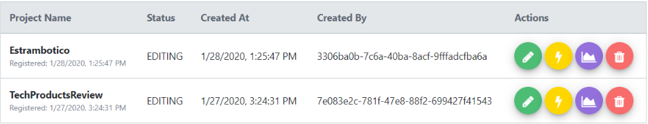
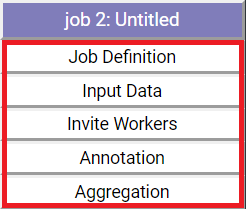
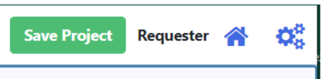

Overview¶
In this section, we will review the front-end with a focus on the system components and interactions as well as the complete services used to construct this solution. It is strongly recommended to read the Tutorial: Creating a Cymphony Project to have an understanding of the functionalities Cymphony provides.
Also, the developers should have experience of using Angular as a basis to extend the Cymphony front-end.
Registration¶
The registration process is managed by the component RegisterComponent.
The view of this component presents a form with the following fields:
username, email, first name, last name, password, and confirmpassword.
Once the user submits the form, the component checks that <password> and <confirmpassword> are the same. Then, using the function createAccount in InfoSearcherService, it makes an API call to the backend: http://SERVER:PORT/api/user/new.
This API will respond with the server result about registering the user. Afterwards, the system calls RegistrationResponseService by filling an entry in the Queue “answerRegistrationProcessQueue$”. The RegisterComponent will consume this Queue, in case it reads a new entry it will redirect to the LoginComponent. If it receives an error, it will show an Alert to the user with the detected error.
Login¶
The Login starts with a typical Sign In Form. All the logic relative to the submission process is included in the Angular Component LoginComponent.
The Structure of the form has the following structure:
1 2 3 4 5 | loginForm = new FormGroup({
user: new FormControl(''),
password: new FormControl(''),
role: new FormControl(''),
});
|
During Login, the User must fill a form with 3 inputs: user, password and role. The two parameters user and password represent the User credetials and are validated by the backend. The last parameter, roel, indicates the profile for the current Session, which has important consequences on the Services the System will provide to the User.
As soon as the User submits the form, Cymphony validates each provided input and then calls the sessionRequest function in SessionService.
SessionService.sessionRequest receives the credentials of the User and does the following actions. First, it generates an API call to the backend: http://SERVER:PORT/api/session/getalgorithm.
This GET Request replies with a Cipher Algorithm Name, a seed and a token. The idea is to encrypt the provided Password using the Algorithm that the Server responded with. We can integrate new Cipher Algorithms by just declaring the algorithm in the subscription of this API Call.
After we encrypt the provided Pass with the Algorithm, the System will generate another API Call: http://SERVER:PORT/api/session/login.
This is a POST Request that sends the processed credentials and the Cipher token used. The Server will reply by generating the Session for the User future requests and the User UUID to generate these Requests.
Finally, the LoginComponent is observing a Queue declared in the SessionService. When the SessionService generates the Session, it adds in this Queue an entry with the UUID. The Login will get this entry and proceed by filling the CookieService with all the information relative to the Session. Then the System will route the User to the ListComponent described in this document.
In case the Session is denied, another Queue is used to notify this event to the LoginComponent, and inform the User.
List¶
This view presents the User wiht all the avaialble Projects and options, based on the User Profile and the current state of the Projects the User is involved in. The component in charge of this functionality is ListComponent.
At the beginning, the component gets all the data related to the projects that the user is involved in. There are two possible API calls in the Service InfoSearcherService, depending on what the profile was set to, for “Requester”, http://SERVER:PORT/api/repository/project/profile/requester/project/list and for “Worker”, http://SERVER:PORT/api/repository/project/profile/worker/job/list.
For front-end purposes, this calls just provide different sets of Projects with different structures. The methods in InfoSearcherService called “projectsOfRequester” and “projectsOfWorker” are in charge of this process. Whenever this process gets the data, they put it in two different Queues. The ListComponent is observing these Queues, consuming the new entries.
The projects from Requester and Worker have different structures. So, we have two different consumers that convert these different entries into unified columns:
“id”: Project ID “name”: Project Name “created_at”: Date of Creation “created_by”: Name of Creator “status”: Current Status “editable”: Boolean that enables Edition
In ListComponent, there is a subscription to the Queues listening to new Entries in InfoSearcherService. Both of them after processing the entries into the correct format, clear the ng-template #viewProjListRef. This Angular directive allows us to insert components inside of the current one in an independent fashion; this contained component will have their own view and behavior. After clearing this directive, the System uses ComponentFactoryResolver to create a new CymphonyTableComponent using #viewProjListRef.
CymphonyTableComponent: This Component encapsulates all the operations to draw and manage the List of Projects and show them to the User. The ListComponent just provides the Data and channels the External Actions requested by the User using the CymphonyTableComponent.
The ListComponent provides the projects information to CymphonyTableComponent using the Service DatatablePopulateService. Specifically, the function generateRequestFillTable fills the Queue that has being consumed by CymphonyTableComponent. If we look at the CymphonyTableComponent, we will see something like:
The actions at the end of each Row are redirected to the ListComponent by DatatablePopulateService using the Queue “orderFromFillTable”.
There are six different actions for each project, which are available based on each Project status:
Edit: Takes the Workflow associated with the selected Project and Store it in the SessionStorage cookie as “project”. It then opens the CreateComponent. Execute: Using InfoSearcherService calls the API http://SERVER:PORT/api/repository/project/project/execute/{Project ID}. This executes the selected project. Monitor: Takes the Workflow associated with the selected Project and Store it in the SessionStorage cookie as “project”. It then opens the MonitorComponent. Delete: “NOT YET”, Delete the current Project in the Database. List: Stores the information about the Project ID, Name and all Jobs associated with the User in SessionStorage cookie. It then opens the ShowComponent. Quit: “NOT YET”, Current User left all the Jobs in the current Project.
The ListComponent screen has the option to create a new Project, this button just calls the function “goto”. This one removes the entry “project” in SessionStorageService cookie and opens the CreateComponent.
Create¶
This functionality is provided by the component CreateComponent. The component View is composed in the Developer perspective of three Sections, namely Workflow Editor, Forms filling space, and Default Layout
Workflow Editor¶
This Section corresponds to the first square at the top of the User Interface and consists ogf an Editor to draw a Workflow of Operations. This Section exposes all the necessary elements to prepare a Directed acyclic graph (DAG).
To start with the process of creating a workflow, Cymphony presents three buttons, one per kind of Operation Cymphony supports. The IDs of these buttons correspond to #createjob, #createsql and #createsample. These buttons allow the User to Drag and Drop them generating new Components on the screen. Every component is Draggable using the External Component “AngularDraggableModule”.
These buttons will produce a new node for our DAG, so we will call them “Node Producer”. If you check the HTML code of one button you will find something like this:
1 2 3 4 5 6 7 | <button ngDraggable mat-fab
id="createjob" #createjob class="node-printer"
[bounds]="myBounds"
[inBounds]="true"
[position]="position"
(endOffset)="onMoveEnd($event, 'job')"
>JOB</button>
|
The (endOffset) declared function is triggered when the User drops this button. Let’s take a look at the function “onMoveEnd”.
1 2 3 4 5 6 7 8 9 10 11 12 13 14 15 16 17 18 19 20 21 22 23 24 25 26 27 28 29 30 31 32 33 34 35 36 37 38 39 40 41 42 43 44 45 46 47 48 49 50 51 52 | /*Drop of a "Node producer" in the screen*/
onMoveEnd($event: IPosition, type: string) { //Receive the drop position and the kind of Node we will generate (Job, SQL or Sample).
/*we store the current position and then return it to the original position*/
this.endOffset.x = $event.x;
this.endOffset.y = $event.y;
this.position = {x: 0, y: 0};
/*Regarding the type of Node, we Set Up the factory*/
let nodesFactory;
let componentRef;
let typeNodeIndex;
let diff: number = 0; //This is just to correct the position due the height of the Angular Material Button
if (type == 'job') {
nodesFactory = this.factoryResolver.resolveComponentFactory(JobComponent);
componentRef = this.nodesViewRef.createComponent(nodesFactory);
typeNodeIndex = ++this.jobMaxIndex;
} else if (type == 'sql') {
nodesFactory = this.factoryResolver.resolveComponentFactory(SqlComponent);
componentRef = this.nodesViewRef.createComponent(nodesFactory);
typeNodeIndex = ++this.sqlMaxIndex;
diff = 56; // Hardcode adjustment of the position
} else if (type == 'sample') {
nodesFactory = this.factoryResolver.resolveComponentFactory(SampleComponent);
componentRef = this.nodesViewRef.createComponent(nodesFactory);
typeNodeIndex = ++this.sampleMaxIndex;
diff = 112; // Hardcode adjustment of the position
} else {
console.error("Unknown kind of node!");
}
/* Creating a new Node with the factory*/
const currentNodeComponent = componentRef.instance;
currentNodeComponent.selfRef = currentNodeComponent;
// ID index and nodesViewRef position to delete
currentNodeComponent.index = this.nodeMaxIndex++;
currentNodeComponent.drawArea = this;
currentNodeComponent.preTittle = type + " " + typeNodeIndex + ": Untitled";
this.nodeListReferences.push(componentRef);
/*Move to the last position of the NodeCreate Button*/
currentNodeComponent.moveTo(this.endOffset.x, this.endOffset.y + diff);
/*Create the FormLabel, the NodeForm and store the configuration*/
this.askLabelsForNewNode(
'node_' + currentNodeComponent.index,
this.getFormsByNodeType(type),
currentNodeComponent.preTittle,
type,
{x: this.endOffset.x, y:this.endOffset.y + diff}
);
}
|
The code works as follows:
Save the positions to assign later to our Node to generate.
2. With a factory, we generate a Component based on the type of the component that was dropped, namely JobComponent, SqlComponent and SampleComponent. All of them represent a Node in the Editor.
The System assignes an Index, Context and a predefined title to the new Node. Also, the Node is moved to the Drop position.
Finally, the function askLabelsForNewNode is called. This one proceeds with two main objectives:
Generation of a NodeForm: A NodeForm is a Logical structure associated with a Node and contains all of its information such as forms filled by User and references to Preceeding Nodes. After the NodeForm is created, this structure will be Used to Execute, ReDraw and Monitor the Node. The NodeForms are stored in a Map called “nodesSettingMap” where the key of each node is its ID. The structure of the FormNodes is the next:
_node_id: string; : Node ID. _form_list: string[]; : List of all the forms the User needs to fill. The forms are provided by FormsNodeModule. _node_tittle: string; : Node Title Defined by the User. _forms_fill: Map<string, any>; : All the Forms in “_form_list” with the associated Form type of Component. _forms_current_conf: Map<string, {}>; : All the Forms in “_form_list” with Form filled by the User as a JSON. _node_kind: string; : Kind of Node _position: {x: number, y: number}; : Position in the screen to Redraw the DAG. _predecessors: string[]; : Nodes which preceed this Node.
Check the FAQ Section to see in details how to add new forms to a Node Type, or customize one form with new inputs. (FormMap & CreateComponent.getFormsByNodeType(type: string))
..Rodrigo, where is the FAQ Section?
Generation of a FormLabel: A FormLabel is a component associated with a specific Node to inform the User in the Editor scene about all forms that need to be filled. The Form label component has the following appearance:
The purple header correspond to the “holder” ElementRef in the FormLabelComponent. Its basic purpose is to inform the associated Node and show the Status of the Node; if the Node is Purple there are still some Forms to fill, if the Node becomes Green the node is ready to be Executed.
The next white blocks surrounded by the red square represent the forms, each entry corresponds to a specific Form. This part is managed by the FormLabelComponent as the “label” ElementRef. Every entry shows the Name of the Form it is representing. When the User clicks on this forms, the service CallFormService is called adding a new entry in the Queue “requestFormPush”. The CreateComponent is consuming this Queue, drawing on the lower part of the screen the Form that was clicked.
{kind=link}
1 2 3 4 5 6 7 8 9 10 11 12 13 14 15 16 17 18 19 20 21 22 23 24 25 26 27 28 29 30 | /*CreateComponent consuming the requestFormPush Queue*/
this.callForm.requestFormPushQueue$.subscribe(
(t : [string, string]) => {
let currentNode = t[0];
let currentForm = t[1];
/*We need to recover the current configuration*/
let forms: NodeForm = this.nodesSettingMap.get(currentNode);
let oldConf: {} = forms.getFormConfiguration(currentForm);
/* Clear the current form, then display the new one*/
this.formViewRef.clear();
let formComponent = this.nodesSettingMap.get(currentNode).getForm(currentForm);
let formFactory = this.factoryResolver.resolveComponentFactory(formComponent);
let componentRef= this.formViewRef.createComponent(formFactory);
let currentFormComponent = componentRef.instance as typeof formComponent;
currentFormComponent.node = t[0];
currentFormComponent.form_id = t[1];
if (oldConf != null){
currentFormComponent.setPreConfiguration(oldConf);
}
}
);
|
As we mentioned before, the nodesSettingMap contains all the information of the Forms already submitted. So, the algorithm works as follows:
Recover the configuration of the Node in nodesSettingMap. Then, check if there exists a previous state for the Form.
Clear the ng-template #viewFormRef, located in the lower part of the screen in the CreateComponent. This Angular directive allows us to insert components inside the current one in an independent fashion, this contained component will have its own view and behaviour.
After clearing this directive, the System uses #viewFormRef and ComponentFactoryResolver to create a new component of the Type given by the Form. We have the component related to the form using NodeForm._forms_fill.
Finally, if there is a previous configuration, the System updates the values directly in the component of the Form.
Each type of Forms has a different input, some of the input when saved in the configuration affect the CreateComponent scene. This special inputs will be described next in the “Forms filling space” Section of this document.
Forms filling space¶
The Forms are being managed by FormsNodeModule, every kind of Form consists of a different Component to be inserted into CreateComponent in #viewFormRef. Currently we have five different Forms:
NodeDefinitionFormComponent
UploadDataFormComponent
WorkerEmailsFormComponent
AnnotationFormComponent
AggregationFormComponent
Node Definition Form (NodeDefinitionFormComponent): User provides general information about the task.
node_tittle
description
When is submitted, the node_title updates the Node Component title in the DAG and the FormLabel reference to the Node.
Upload Data Form (UploadDataFormComponent): User specifies the origin of the Data this Node will process, could be a file with tuples or the output of another Node.
predecessors
files_source
In case the User sets predecessors, the CreateComponent will request to draw an arrow from each predecessor to the Node.
Worker Emails Form (WorkerEmailsFormComponent): Allows to send invitations to people to work as a Worker in this Job.
emails
files
Annotation Form (AnnotationFormComponent): Specify the Data type the workers must Annotate for this Job.
annotation_type
Aggregation Form (AggregationFormComponent): Specify the rule of Aggregation that will be used to select the correct answer from the different Workers Annotations
aggregation_id
aggregation_rule
aggregation_desc
When the user Saves any Form type, a JSON with the Requester inputs is generated. This object is stored in its correspondent NodeForm in the CreateComponent. The JSON is sent there using FormResponseService, every Form Component pushes its final configuration to the Queue “requestFormResponse”; then, the CreateComponent consumes this Queue as follows:
1 2 3 4 5 6 7 8 9 10 11 12 13 14 15 16 17 18 19 20 21 22 23 24 25 26 27 28 29 30 31 32 | /*Consuming the Form generated Responses*/
this.formResponseReceiver.requestFormResponseQueue$.subscribe(
( t : {}) => {
let keys: string[] = Object.keys(t);
/*Get the NodeForm object and set the configuration for the Node in the Form "form_id"*/
let nodeFormofT = this.nodesSettingMap.get(t["node_id"]);
nodeFormofT.setFormConfiguration(t["form_id"], t);
/*Ask to the FormLabel of the node to update the state*/
this.formLabeler.generateRequestUpdFormLabel(t["node_id"], t["form_id"]);
/*Whenever we receive a new definition to tittle we need to update*/
if(keys.indexOf('node_tittle') != -1){
this.changeNodeComponentTittle(t["node_id"], t["node_tittle"]); /* Change the NODE Component Info*/
this.formLabeler.generateRequestUpdLabelName(t["node_id"], t["form_id"], t["node_tittle"]); /*Change the node label at the sidebar*/
nodeFormofT.setNodeTittle(t["node_tittle"]); /*Change the Nodes configuration that will be stored in the back end*/
}
/* Whenever the form provide predecessors info we need to update the DAG Creation of Edges between Nodes of the DAG*/
if(keys.indexOf('predecessors') != -1 && t['predecessors'] != null && t['predecessors'].length > 0){
let nf : NodeForm = this.nodesSettingMap.get(t["node_id"]);
nf.setPredecessors(t['predecessors']);
this.edgesCreationManager(t["node_id"], t['predecessors']);
} else if(keys.indexOf('predecessors') != -1 && (t['predecessors'] == null || t['predecessors'].length == 0)){
let nf : NodeForm = this.nodesSettingMap.get(t["node_id"]);
nf.setPredecessors(null);
}
}
)
|
The code works as follows:
Recover the configuration object of the Node (NodeForm) from nodesSettingMap. Then, ask the NodeForm object to store the received configuration for the Form.
Using the FormLabelingService, fill the requestUpdFormLabelQueue$. This Queue is consumed by the DefaultLayoutComponent that manages the Sidebar container of the FormLabels. This component consumes the Queue and changes the status of the forms putting a gray color instead of white to the label.
If the form has a definition for “node_tittle”; the Component orders the NodeComponent in the DAG Editor, The FormLabel and the NodeForm to change the Title they are informing.
If the form has a definition for “predecessors”; the component stores the relation in the NodeForm and calls the edgesCreationManager function to proceed creating the relations between the nodes in the DAG. Each link between nodes is represented using an EdgeComponent. First, this Component sets the relation between the nodes and the positions. When User plays with the objects in the editor, the positions are updated with the associated events. Then, the function EdgeComponent.drawLine creates the line you can see in the Editor.
For changing and improving the way how the lines are being drawn, the Developer only needs to update the function EdgeComponent.drawLine and EdgeComponent.removeLine. That logic is totally isolated.
Finally, the nodesSettingMap stores the input given by the User for the Form with the step (1). As you may notice, this process does not send this information to the backend, the results are only stored in CreateComponent.nodesSettingMap. To save the configuration, the User needs to use the final Component of this solution.
Default Layout¶
This Section is managed by the DefaultLayoutComponent that is the permanent visible portion of Cymphony layout. This component allows the Developer to handle the Header and the Sidebar of the System. The Create Project functionality uses thes two Sections.
The DefaultLayoutComponent has major changes when the User enters into the CreateComponent. One is the apparition of the “Sidebar” that contains the FormLabels described earlier and the other is the “Save Project” functionality which appears on the header.
The Sidebar contains one directive ng-template #viewLabelsRef. We described in the Section Workflow Editor, how the System asks for a FormLabel when a “Node Producer” button is dropped in the editor. Going more deeply, when that action occurs the createComponent uses the FormLabelingService, adding an entry in requestFormLabelsQueue$. This Queue is consumed by DefaultLayoutComponent as follows:
1 2 3 4 5 6 7 8 9 10 11 12 13 14 15 16 17 18 19 20 21 22 23 24 25 26 27 | /*DefaultLayoutComponent consuming the Node Producer request for a Form Label*/
this.formLabeling.requestFormLabelsQueue$.subscribe(
(info: NodeForm) => {
/*This variable is a trick, it starts to exist when the lifecycle of the component arrives to ngAfterViewInit*/
if(this.searchLabelRef == null) {
/*To add the pre-existent nodes labels, waiting for the moment the template 'searchLabelRef' has been drew in the component*/
this.formsToLabel.push(info);
} else {
/*To process the new nodes Forms Labeling after the component is ready*/
const labelsFactory = this.factoryResolver.resolveComponentFactory(FormLabelComponent);
/*Creating the FormLabelComponent*/
let componentRef = this.searchLabelRef.createComponent(labelsFactory);
let currentComponent = componentRef.instance;
this.labelListReferences.push(componentRef);
/*Assigning relevant values*/
currentComponent.node_id = info.node_id;
currentComponent.forms = info.form_list;
currentComponent.description = info.node_tittle;
}
}
);
|
The DefaultLayoutComponent contains a variable “labelsViewRef” to manage the ViewContainerRef #viewLabelsRef. Sometimes this Object is defined but does not have a value; however, to make the process safer the component defines a “searchLabelRef” that will only be different than NULL when the Lifecycle of the component is completed. This has been developed in this way for reasons that will be described later.
..Rodrigo, what do you mean by “enter”?
The DefaultLayoutComponent consumes a NodeForm to draw it as a FormLabel, the code will enter if the “searchLabelRef” exists. Then, using the ComponentFactoryResolver a new FormLabelComponent will be crearted in the ng-template #viewLabelsRef, belonging to the sidebar.
For saving the current project in the Database, the DefaultLayoutComponent when the router-outlet targets CreateComponent, adds a new button in the header.
{kind=link}
When clicked, this button triggers a function that uses the FormLabelingService to fill an entry in the Queue requestSaveProjectQueue$. CreateComponent is consuming this Queue, the code is exposed below:
1 2 3 4 5 6 7 8 9 10 11 12 13 14 15 16 17 18 19 20 21 22 23 24 25 26 27 28 29 30 31 32 33 34 35 36 37 38 39 40 | /*DefaultLayoutComponent consuming an entry*/
this.formLabeler.requestSaveProjectQueue$.subscribe(
(t: null) => {
/*If the project still does not have an ID, it does not exist in the database yet*/
if(this.projectID == null){
/*Opens a pop up asking the User a name for the project*/
this.openDialog();
} else {
/*This step stringifies the current "nodesSettingMap", this makes possible to store in DB the Nodes configuration*/
let text = this.configToText();
this.backEndRequester.saveProject(text, this.projectTittle, this.projectID, this.cookieService.get('token_session'), this.cookieService.get('user_uuid'));
}
}
)
/*Pop up context*/
openDialog() {
const dialogRef = this.dialog.open(DialogContentComponent, {height: '230px', width: '600px'});
dialogRef.afterClosed().subscribe(result => {
if(result == "close|by@system"){
return;
}
/*If the User provides some valid name*/
else if (result != null && result != "") {
this.projectTittle = result;
this.backEndRequester.createProject(this.projectTittle, this.cookieService.get('token_session'), this.cookieService.get('user_uuid'), this);
} else {
alert("Not a valid Name");
}
})
}
|
The operation can resume using one of the bellow options:
If the Project has an ID, i.e., it is already stored in the Database, the component uses InfoSearcherService function “saveProject” to store the current Workflow as String calling the API ` http://SERVER:PORT/api/repository/project/project/workflow/update/{Project ID}`.
If the Project does not have an ID, the System will try to Store it in the Database. A pop-up wil appear to assign a name. As the User submits using InfoSearcherService function “createProject”, it will call the API http://SERVER:PORT/api/repository/project/project/new.
If the project is correctly created, the Server will replay with the ID of the project. Then, the CreateComponent will assign the ID and using InfoSearcherService function “saveProject” will store the current Workflow as String.
Editor¶
The Edit option presented in the ListComponent corresponds to the CreateComponent. The main difference is that when the environment is being settled, entering in edition mode will get the current configuration of the selected Project and will redraw the plan as a starting point.
The code works as follows:
1 2 3 4 5 6 7 8 9 10 11 12 13 14 15 16 17 18 19 20 21 22 23 24 25 26 27 28 29 30 | /*This piece of code is executed before the View inits, but after the component content starts to work*/
ngAfterContentInit(): void {
/*Checking if the ListComponent has been stored a project to redraw*/
let text_dag = this.sessionStorage.get('project');
/*If there is a project*/
if(text_dag != null){
/*Parses the project to a JSON*/
let generalProj = JSON.parse(this.sessionStorage.get('project'));
let dec = generalProj['test'];
/*Declares the project to the CreateComponent*/
this.projectTittle = dec['name'];
this.projectID = dec['id'];
/*Informs to the User the current project in Edition*/
this.headerService.generateRequestUpdateHeader('Editing',this.projectTittle, 'Requester', true);
/*This function redraws everything from the NodeForm's objects saved in the Workflow*/
if(dec['workflow']){
this.drawDAGFromConfig(dec['workflow']);
}
} else {
/*If there is not a project, we open the normal Project Creation empty scene*/
this.headerService.generateRequestUpdateHeader('Project', 'Create', 'Requester', true);
}
}
|
This part of the code is very straightforward, The System recovers the configuration of the stored nodes and sends to redraw the DAG. The rest of the System behaviour does not change.
Monitor¶
The Edit option presented in the ListComponent corresponds to MonitorComponent This component starts by getting the current configuration of the selected Project. Then, it will redraw the plan as a DAG similar to the CreateComponent, but with limited functionalities.
1 2 3 4 5 6 7 8 9 10 11 12 13 14 15 16 17 18 19 20 21 22 23 24 25 26 27 28 29 30 31 32 33 34 35 36 37 38 39 40 41 42 43 44 45 46 47 48 49 50 51 52 53 54 55 56 57 58 59 60 61 62 63 64 65 66 67 68 69 70 71 72 | ngOnInit() {
/*Getting workflow and updating header*/
let role = this.cookieService.get('role');
let dec = JSON.parse(this.sessionStorage.get('project'))['test'];
this.headerService.generateRequestUpdateHeader('Monitoring',dec['name'], role, false);
/*Restoring NodeForm objects for every Node to plot in the DAG*/
let firstObj: {} = JSON.parse(dec['workflow']);
let dag = firstObj['nodes'];
let conf: Map<string ,NodeForm> = this.restoreConfiguration(dag);
/*This will contains the relation while the opposite Node has not been drew*/
let pendantRelations : relation[] = [];
/*Iterates the NodeForms*/
conf.forEach((value: NodeForm, key: string) => {
/*Regarding the type of Node, we Set Up the factory*/
let nodesFactory;
let componentRef;
let typeNodeIndex;
/*Creating the component regarding the Node type*/
if (value.node_kind == 'job') {
nodesFactory = this.factoryResolver.resolveComponentFactory(JobMonitorComponent);
componentRef = this.nodesViewRef.createComponent(nodesFactory);
typeNodeIndex = ++this.jobMaxIndex;
} else if (value.node_kind == 'sql') {
nodesFactory = this.factoryResolver.resolveComponentFactory(SqlMonitorComponent);
componentRef = this.nodesViewRef.createComponent(nodesFactory);
typeNodeIndex = ++this.sqlMaxIndex;
} else if (value.node_kind == 'sample') {
nodesFactory = this.factoryResolver.resolveComponentFactory(SampleMonitorComponent);
componentRef = this.nodesViewRef.createComponent(nodesFactory);
typeNodeIndex = ++this.sampleMaxIndex;
} else {
console.error("Unknown kind of node!");
}
const currentNodeComponent = componentRef.instance;
currentNodeComponent.selfRef = currentNodeComponent;
/*ID index and nodesViewRef position to delete with its reference*/
this.nodeMaxIndex++;
currentNodeComponent.index = value.node_id.split("_")[1];
currentNodeComponent.drawArea = this;
currentNodeComponent.preTittle = (value.node_tittle != null && value.node_tittle != "") ? value.node_tittle : value.node_kind + " " + typeNodeIndex + ": Untitled";
this.nodeListReferences.push(componentRef);
/*Move to the last position of the NodeCreate Button*/
currentNodeComponent.moveTo( value.position['x'], value.position['y']);
/*Not necessary in the Monitor*/
this.nodesSettingMap.set('node_' + currentNodeComponent.index, value);
/*Fills the predecessors to Fill after*/
(value.predecessors) ? pendantRelations.push({origin: key, targets: value.predecessors}) : null;
});
/*Manage the creation of Edges, Equals to CreateComponent behaviour*/
pendantRelations.forEach((t: relation) => {
this.edgesCreationManager(t.origin['name'], t.targets);
})
/*This just sets values for testing*/
this.defineTestChart();
}
|
The code works as follows:
Get the project Workflow from the SessionStorageCookie. Then, resolve the previous configuration of every Node constructing each FormNode.
Iterate every NodeForm, constructing a representation in the Monitor scene for each of them. The representations correspond to the components: JobMonitorComponent, SqlMonitorComponent and SampleMonitorComponent.
Allocate the Nodes representation in the correct spots and draw the relations.
This Node representation has different behaviors than their CreateComponent counterparts . If the User clicks them the charts below will be updated with the next information:
Work Progress: Shows percentage of finished tasks in the selected job. Calls the API http://SERVER:PORT/api/job/monitor/tuple/finished.
Workers Quality: Calls the API http://SERVER:PORT/api/job/monitor/worker/quality.
Work Quality: Calls the API http://SERVER:PORT/api/job/monitor/worker/annotations.
Active Workers: Show the percentage of Workers that are already annotating tasks. Calls the API http://SERVER:PORT/api/job/monitor/worker/actives.